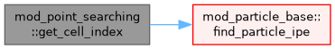
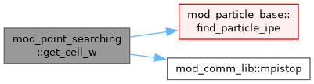
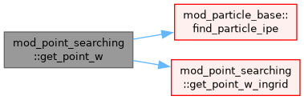
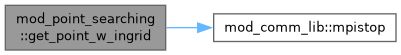

mod_point_searching Module Reference
Functions/Subroutines | |
| subroutine | get_point_w_ingrid (igrid, xp, wp, variable_type) |
| subroutine | get_point_w (xp, wp, variable_type) |
| subroutine | get_cell_w (xp, wc, variable_type) |
| subroutine | get_cell_index (xp, ipe, igrid, ixcd) |
Function/Subroutine Documentation
◆ get_cell_index()
| subroutine mod_point_searching::get_cell_index | ( | double precision, dimension(1:ndim) | xp, |
| integer | ipe, | ||
| integer | igrid, | ||
| integer | ixc, | ||
| double precision | d ) |
Definition at line 185 of file mod_point_searching.t.
Here is the call graph for this function:

◆ get_cell_w()
| subroutine mod_point_searching::get_cell_w | ( | double precision, dimension(1:ndim) | xp, |
| double precision, dimension(1:nw) | wc, | ||
| character(*) | variable_type ) |
Definition at line 115 of file mod_point_searching.t.
Here is the call graph for this function:

◆ get_point_w()
| subroutine mod_point_searching::get_point_w | ( | double precision, dimension(1:ndim) | xp, |
| double precision, dimension(1:nw) | wp, | ||
| character(*) | variable_type ) |
Definition at line 85 of file mod_point_searching.t.
Here is the call graph for this function:

◆ get_point_w_ingrid()
| subroutine mod_point_searching::get_point_w_ingrid | ( | integer, intent(in) | igrid, |
| double precision, dimension(1:ndim) | xp, | ||
| double precision, dimension(1:nw) | wp, | ||
| character(*) | variable_type ) |
Definition at line 11 of file mod_point_searching.t.
Here is the call graph for this function:

Generated by